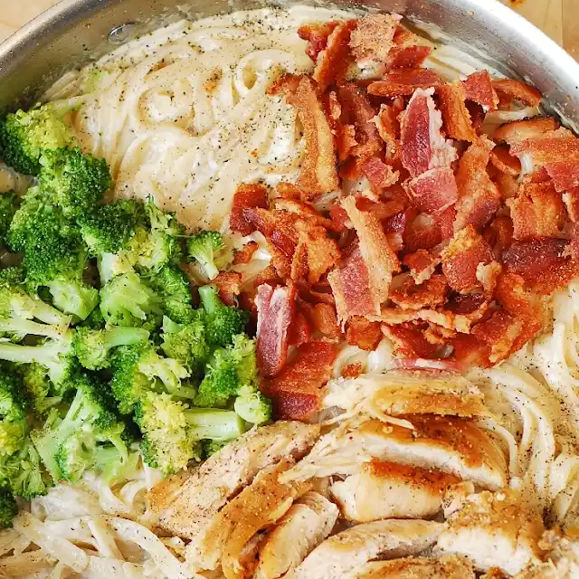

Fettuccine Alfredo with Chicken, Broccoli, and Bacon

Description
Easy Chicken Broccoli Pasta with Bacon - made with creamy alfredo sauce!
This simple recipe is packed with protein and veggies!
This pasta dish has all of my favorite ingredients:
creamy broccoli, bacon, and chicken breast. Everything is combined
together in a delicious creamy Parmesan sauce.
Ingredients
- Bacon
- Broccoli
- Skinless chicken breasts
- Fettuccine pasta
- Parmesan cheese
- Milk
- Heavy cream
- Garlic
- Olive oil
- Salt
- Pepper
Steps
- Cook the chicken breasts seasoned with salt and pepper in a large
skillet on medium heat.
- Slice the chicken into thin slices.
- Add minced garlic with heavy cream and milk. Bring to boil and
reduce to simmer.
- Stir in the cheese.
- Keep stirring until it completely melts into a creamy sauce.
- Cook the pasta according to instructions.
- Drain pasta.
- Combine everything together: cooked pasta, cooked bacon, broccoli,
and cream sauce.
- Season with salt and pepper.
- Top with sliced cooked chicken.